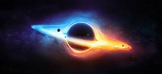

|
In 1958, David Finkelstein identified the Schwarzschild surface as an event horizon, "a perfect unidirectional membrane: causal influences can cross it in only one direction".[36] This did not strictly contradict Oppenheimer's results, but extended them to include the point of view of infalling observers. Finkelstein's solution extended the Schwarzschild solution for the future of observers falling into a black hole. A complete extension had already been found by Martin Kruskal, who was urged to publish it.[37]
These results came at the beginning of the golden age of general relativity, which was marked by general relativity and black holes becoming mainstream subjects of research. This process was helped by the discovery of pulsars by Jocelyn Bell Burnell in 1967,[38][39] which, by 1969, were shown to be rapidly rotating neutron stars.[40] Until that time, neutron stars, like black holes, were regarded as just theoretical curiosities; but the discovery of pulsars showed their physical relevance and spurred a further interest in all types of compact objects that might be formed by gravitational collapse.[citation needed]
In this period more general black hole solutions were found. In 1963, Roy Kerr found the exact solution for a rotating black hole. Two years later, Ezra Newman found the axisymmetric solution for a black hole that is both rotating and electrically charged.[41] Through the work of Werner Israel,[42] Brandon Carter,[43][44] and David Robinson[45] the no-hair theorem emerged, stating that a stationary black hole solution is completely described by the three parameters of the Kerr–Newman metric: mass, angular momentum, and electric charge.[46]
At first, it was suspected that the strange features of the black hole solutions were pathological artifacts from the symmetry conditions imposed, and that the singularities would not appear in generic situations. This view was held in particular by Vladimir Belinsky, Isaak Khalatnikov, and Evgeny Lifshitz, who tried to prove that no singularities appear in generic solutions. However, in the late 1960s Roger Penrose[47] and Stephen Hawking used global techniques to prove that singularities appear generically.[48] For this work, Penrose received half of the 2020 Nobel Prize in Physics, Hawking having died in 2018.[49] Based on observations in Greenwich and Toronto in the early 1970s, Cygnus X-1, a galactic X-ray source discovered in 1964, became the first astronomical object commonly accepted to be a black hole.[50][51]
Work by James Bardeen, Jacob Bekenstein, Carter, and Hawking in the early 1970s led to the formulation of black hole thermodynamics.[52] These laws describe the behaviour of a black hole in close analogy to the laws of thermodynamics by relating mass to energy, area to entropy, and surface gravity to temperature. The analogy was completed when Hawking, in 1974, showed that quantum field theory implies that black holes should radiate like a black body with a temperature proportional to the surface gravity of the black hole, predicting the effect now known as Hawking radiation.[53]
|

|